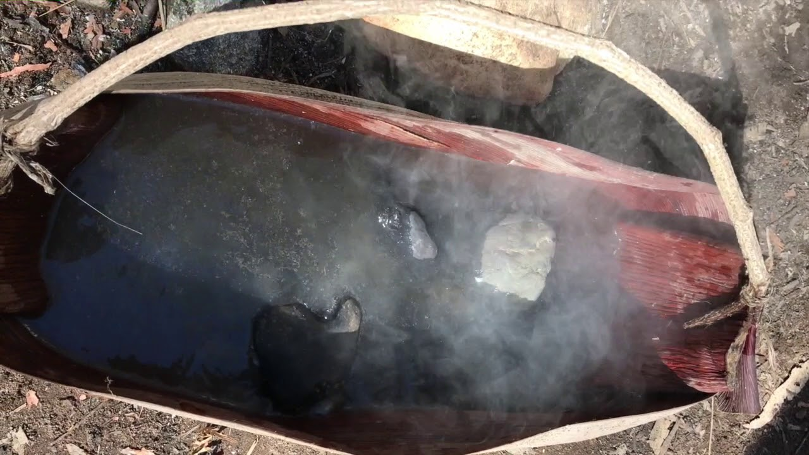

Getting water is your highest priority in survival after being out fo immediate danger. Without water you will be lucky to survive three days. The best way to get potable water if you have a metal container is to find a lake or stream and boil it. Of course for this to work you must have a fire unless you want Giardiasis, so you may need to find another way. the two best ways to get water wtihout needing fire is to collect rainwater or to collect dew. Sea ice is drinkable if its new. Two things you should never drink is seawater and eating snow, both of these will make you use mor ewater than you gain from them
